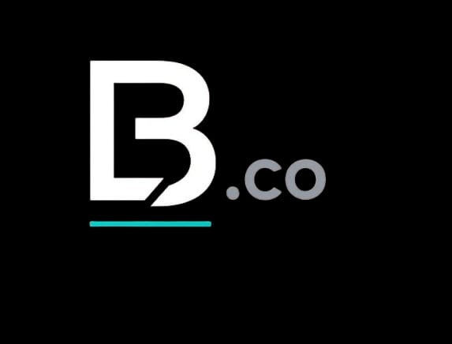

Five Colors, One Accent: Designing Inside a Small Palette
How limiting BL.co's entire visual identity to five colors made every decision faster, not slower.
Every design brief we write bans something — a color, an effect, a font, an animation style. Not as an afterthought. As the first real decision.
Most creative briefs are lists of things to include. Ours tend to read like the opposite: a short list of what a project is allowed to look like, and a longer list of what it's explicitly not allowed to be. No neon. No glow. No bouncing motion. No more than one accent color. It reads, at first, like a document about limitation. In practice, it's the single most useful thing we write before a project starts.
Nobody actually starts from nothing. Every designer opens a new file already carrying a hundred defaults absorbed from the last hundred things they've seen — a shadow style that's currently fashionable, a gradient that was everywhere last year, an animation easing curve copied from a template. Those defaults arrive whether you invite them or not. A brief with no constraints doesn't produce more original work; it produces whatever's currently ambient in the culture, filtered through whoever's holding the mouse.
A ban interrupts that. The moment you write "no neon," you force every subsequent color decision to be made on purpose, because the easy answer just got taken off the table.
Constraints don't limit a good decision. They remove the bad ones before they get a chance to feel inevitable.
There's a second, quieter benefit: restraint is something a viewer can actually perceive, even if they can't name it. A page built from five colors instead of fifteen doesn't just look calmer — it reads as considered, because consistency is evidence of a decision having been made and held to. Most people can't tell you what "good typography" means. They can absolutely tell you when something feels expensive versus when it feels like it was assembled from whatever was lying around. Restraint is one of the few design qualities that survives translation into a gut feeling.
For BL.co's own visual identity, the rule set is short: black, charcoal, soft gray, white, and one disciplined light-blue accent used only for hover states, status markers, and thin dividers. No gradients beyond a single restrained one behind the timeline indicator. No drop shadows heavier than what a sheet of paper would cast. Every division inherits this rule set rather than inventing its own — which is precisely why five very different products, from a tic-tac-toe game to a network diagnostics tool, still read unmistakably as the same company.
None of this is really about taste. It's about making five hundred small decisions faster, because four hundred of them were already answered the day the brief was written.
Before anything ships, we ask one question: could this exact screen belong to any other product with the labels swapped? If the answer is yes, the restraint wasn't tight enough yet — the constraints hadn't actually forced a specific decision, they'd just described a vague mood. A real constraint produces something that couldn't have come from anywhere else. That's the whole test. Not "does this look premium," but "is this recognizably ours with the logo covered up."